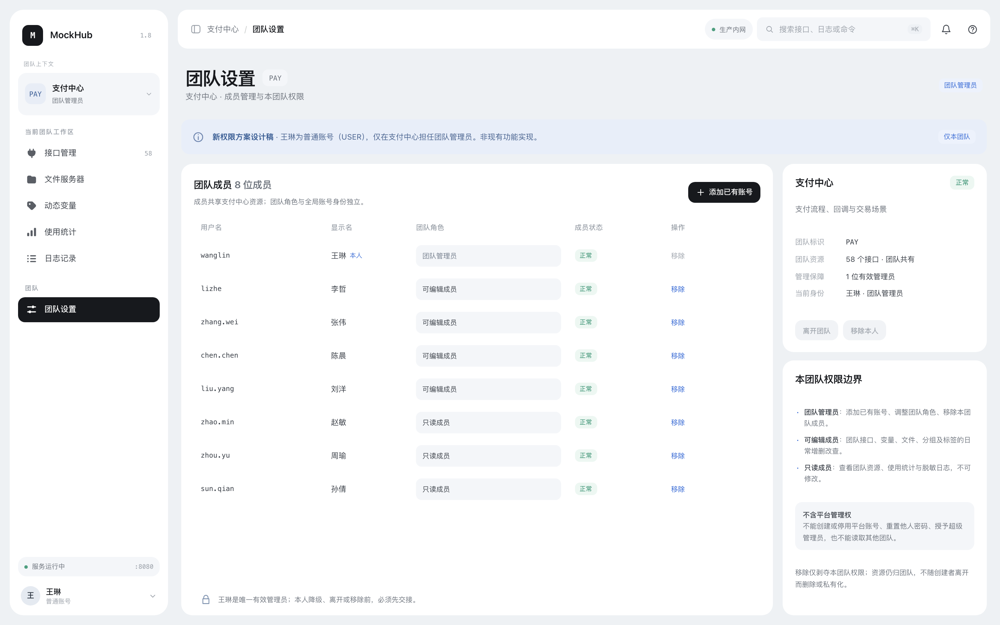
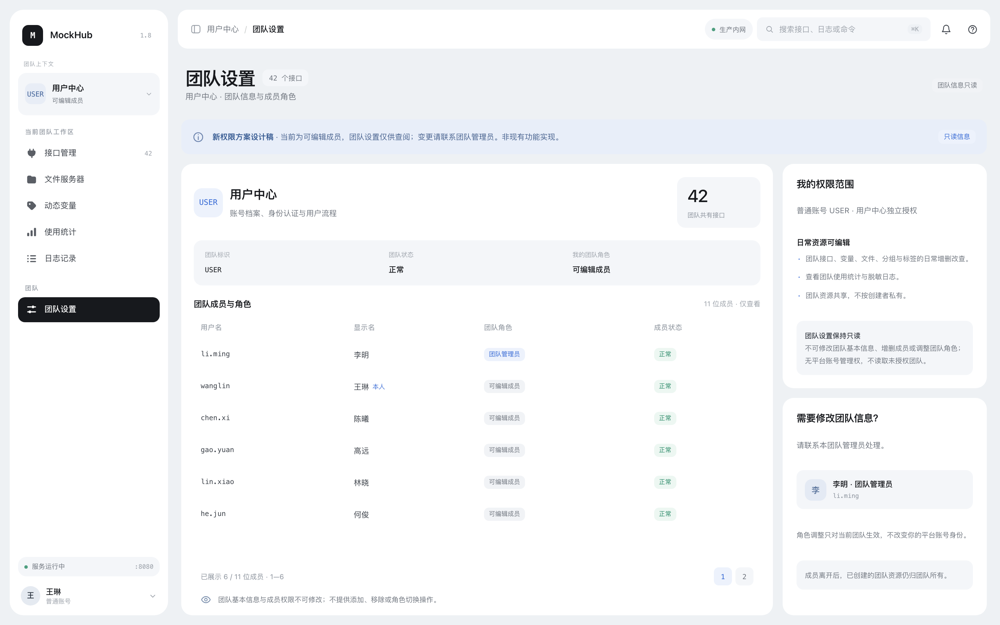
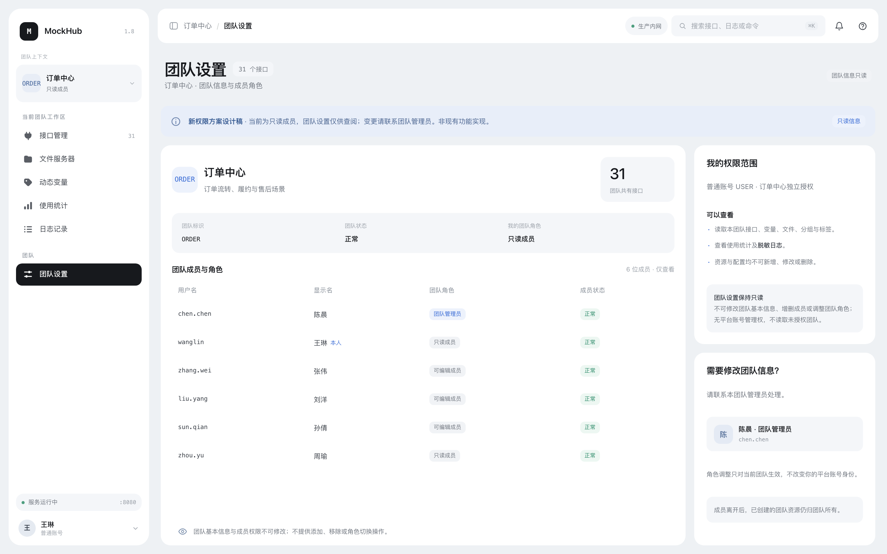
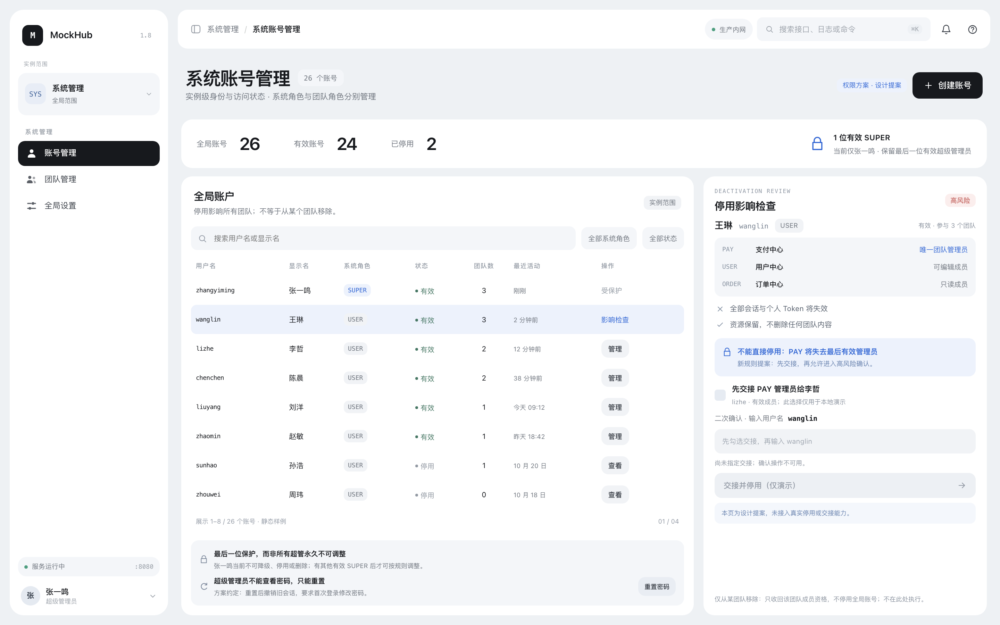
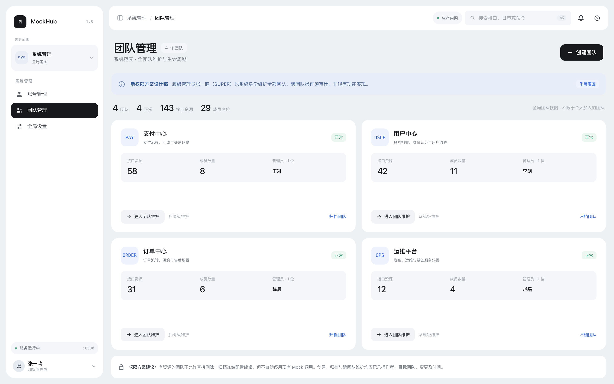
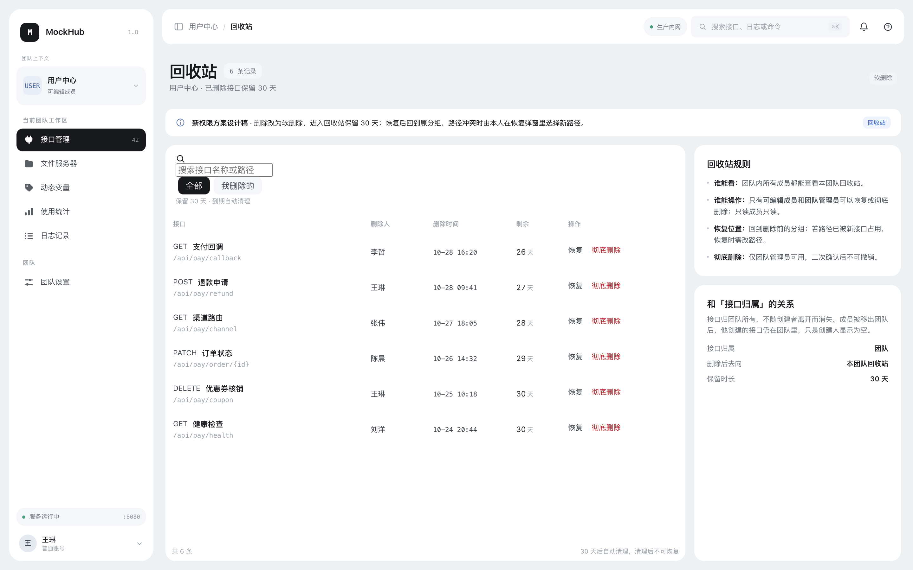
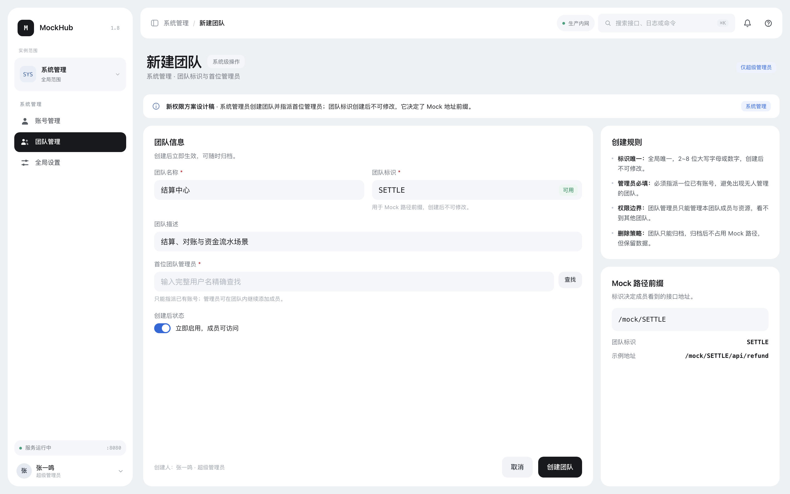
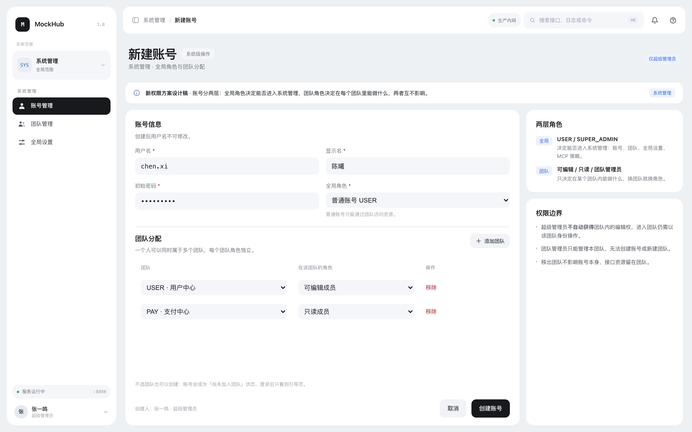

团队与系统管理
MOCKHUB / FLAT / 10 PAGES实心图标 · 纯色分区 · 零阴影 · 仅左下角用户入口。每张缩略图对应独立的 1440 × 900 页面稿。

03团队设置 · 管理员
成员角色、添加已有账号与末位管理员保护

11团队信息 · 可编辑成员
可查看团队成员与职责，不可管理成员

12团队信息 · 只读成员
团队信息只读，角色和管理入口保持一致

06系统管理 · 账号
区分系统角色与团队角色，停用需影响检查

07系统管理 · 团队
创建团队指定管理员，归档与跨团队维护分开

14系统管理 · MCP 策略
个人凭证迁到个人账号，系统仅管理实例策略与工具

15回收站 · 可编辑成员
软删除保留 30 天，恢复回到原分组，彻底删除仅管理员

16变更记录 · 可编辑成员
每次保存留痕，可回滚，回滚本身也是一条记录

17新建团队 · 超级管理员
标识唯一且不可修改，必须指派首位管理员

18新建账号 · 超级管理员
全局角色与团队角色分离，一次可分配多个团队